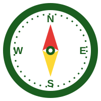

Your 3 careers
Your 3 careers will appear here, each with a photo, the reason we chose it, the subjects to focus on and real Nigerian routes into it.

NAIJA CAREER COMPASS AIBuilt with AI by Yewa College ByteBusters
Tell us what you enjoy. The AI suggests 3 careers with real Nigerian routes into them: university, polytechnic or a skilled trade.
Secondary and tertiary students often have limited awareness of the full range of career opportunities available to them, and existing career guidance is often generic or disconnected from their actual interests and strengths.
Four steps, from your answers to your 3 career cards.
Pick your favourite subject and what you enjoy. Choose from the lists or type your own.
A privacy filter removes names, ages, phone numbers and emails. Then our code checks that every answer is filled in.
The AI reads our 5-part prompt plus your answers, and replies with exactly 3 careers as JSON.
Our code checks the guardrails, then shows each career with a photo, the reason, the subjects and the routes.
Your 3 careers will appear here, each with a photo, the reason we chose it, the subjects to focus on and real Nigerian routes into it.
Every time, the AI reads these 5 parts with your answers. This is our real prompt, word for word, taken from rules.js.
There is no sign-up and nothing is saved. Before anything reaches the AI, a privacy filter removes phone numbers, emails, account or ID numbers, names after "my name is", and ages.
The key that lets us use the AI is paid for by an adult. It lives only on the server, never in this page and never on the screen.
Ask for careers first.
Ask for careers first.